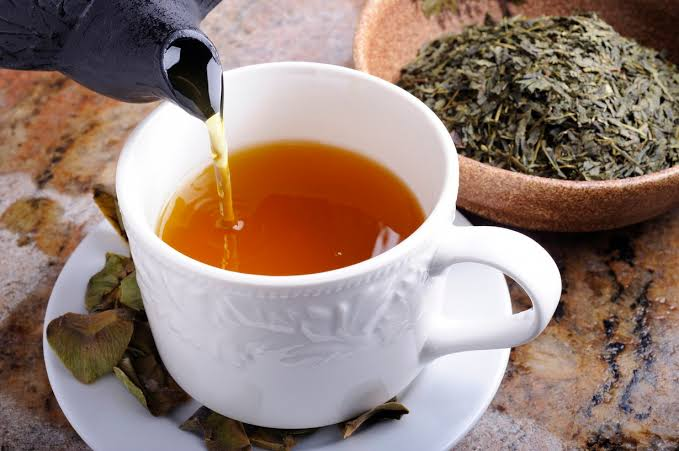
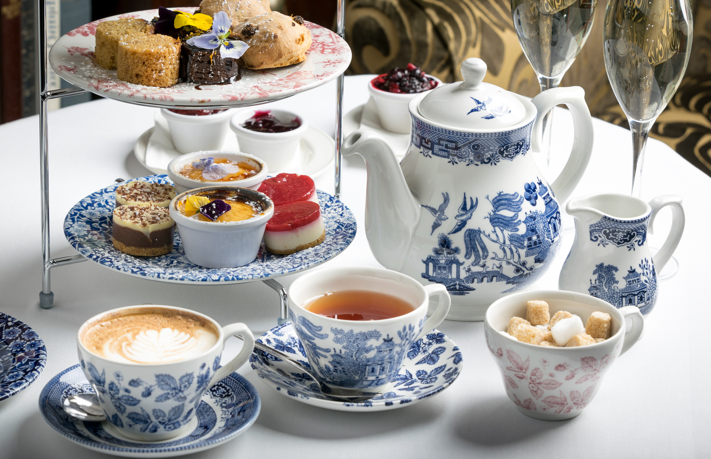

Tervetuloa tutustumaan teen kiehtovaan maailmaan! Tee on yksi maailman suosituimmista juomista ja sitä nautitaan lukemattomissa eri muodoissa ympäri maailmaa. Tällä sivustolla opit teen historiasta, eri teelaaduista ja teen valmistuksesta.

Teen historia
Teen historia ulottuu tuhansien vuosien taakse. Teen uskotaan saaneen alkunsa Kiinassa, kun teepuun lehtiä päätyi vahingossa kuumaan veteen. Vähitellen teen juomisesta tuli tärkeä osa kiinalaista kulttuuria ja perinnettä.
Kiinasta tee levisi ensin muualle Aasiaan, kuten Japaniin. Eurooppaan tee saapui 1600-luvulla kauppareittien kautta ja siitä tuli nopeasti suosittu juoma Englannissa.
Nykyään tee on yksi maailman juoduimmista juomista. Sitä nautitaan ja valmistetaan lukuisilla eri tavoilla eri kulttuureissa.
Lue lisää teen historiasta
History of Tea | UK Tea & Infusions AssociationTeehetken kissakuva
Hae satunnainen kissakuva teehetkesi iloksi.
Kuvat näytetään alla.
Suosituimmat teelaadut
- Musta tee - voimakas ja täyteläinen maku
- Vihreä tee - raikas ja kevyt vaihtoehto
- Valkoinen tee - mieto ja hienostunut maku
- Yrttitee - yrttinen, kukkainen tai hedelmäinen
Teehetken sää
Hae tämänhetkinen sää Vaasasta ja saat samalla teesuosituksen.
Säätiedot näkyvät tässä.
Tiesitkö?
Kaikki musta, vihreä, valkoinen ja oolong-tee tulevat samasta teekasvista. Erot tulevat lehtien käsittely- ja valmistustavoista.
Eri teelajien vertailu
| Teelaji | Maku | Haudutuslämpötila |
|---|---|---|
| Musta tee | Voimakas | 100 °C |
| Vihreä tee | Raikas | 70-80 °C |
| Valkoinen tee | Mieto | 75-85 °C |
| Yrttitee | Vaihtelee yrttien mukaan | 95-100 °C |
Haudutuslämpötilan merkitys
Eri teelaadut vaativat erilaisen haudutuslämpötilan. Esimerkiksi vihreä tee valmistetaan yleensä noin 70-80 °C vedessä, kun taas musta tee kestää kiehuvaa vettä.
Tee Japanissa
Japanissa vihreä tee on erittäin suosittua. Perinteinen japanilainen teeseremonia korostaa rauhallisuutta, kunnioitusta ja teen valmistuksen taitoa.
Tee Englannissa
Englannissa iltapäivätee eli afternoon tea on tunnettu perinne. Teen kanssa nautitaan usein pieniä voileipiä, leivonnaisia ja keksejä.

Teen valmistus
Haluatko oppia lisää teen valmistuksesta?
Siirry Teen valmistus-sivulle